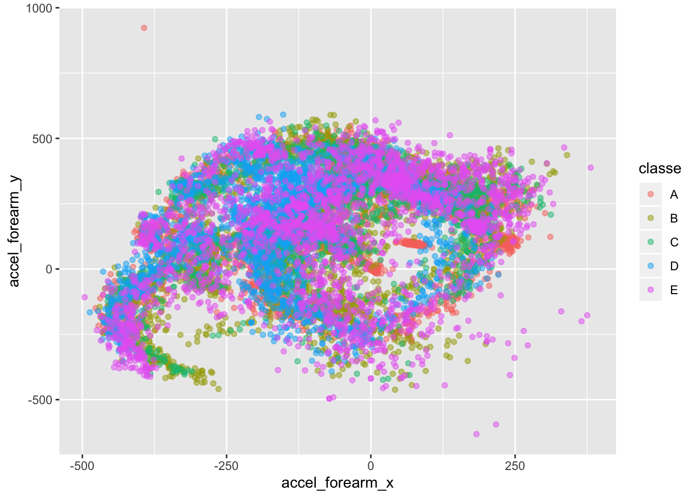
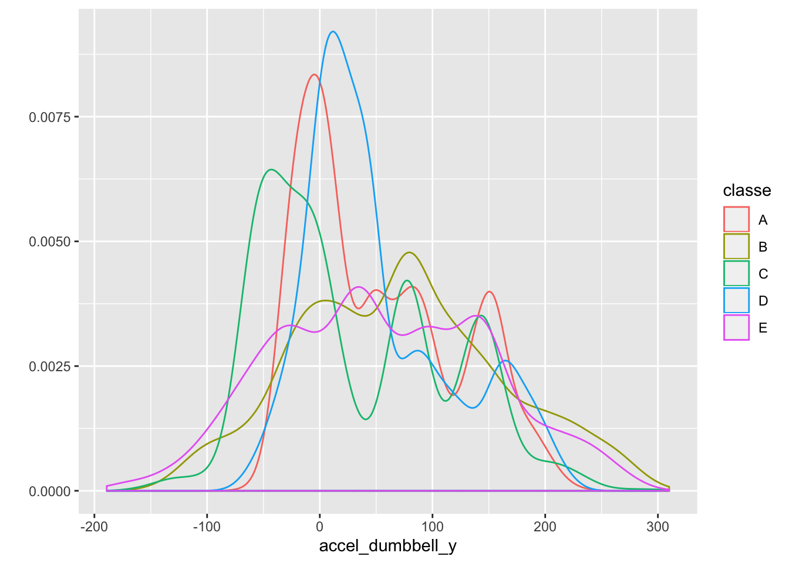
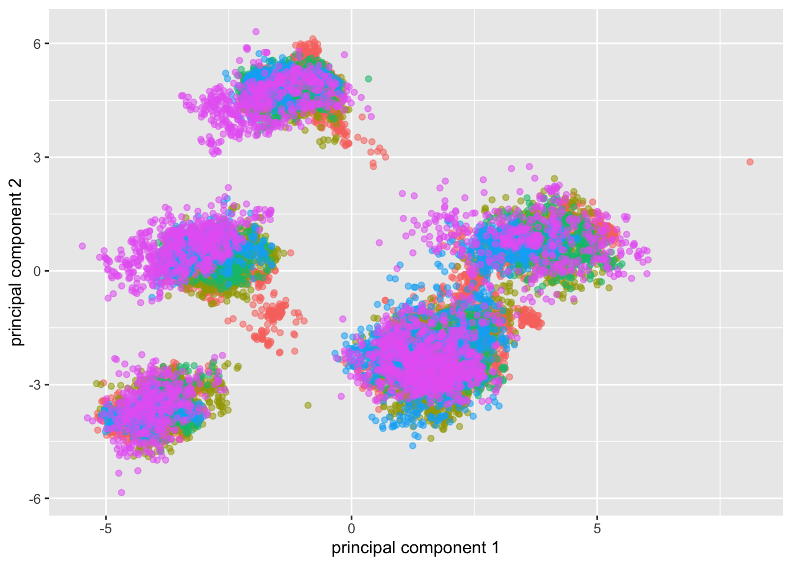
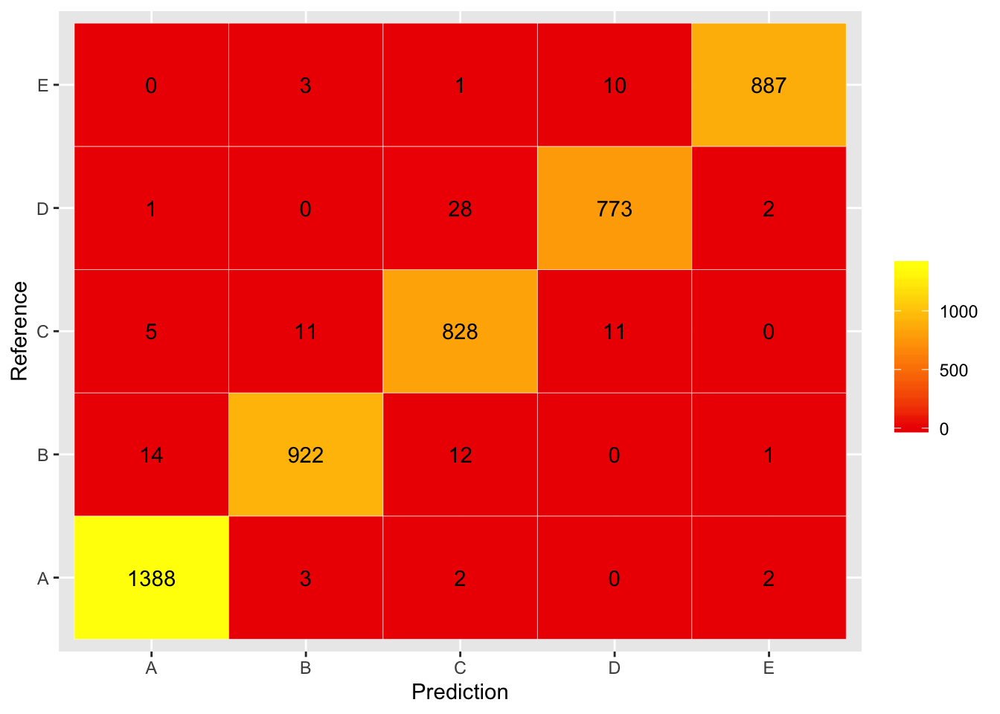

This report deals with a dataset concerning dumbbell curls that was collected using sensors on the arm, forearm, belt and the dumbell. Our aim is to classify the exercise data into five classes of wrongly performed exercises. See here for more details and the original data.
First, we download the data and split it into a training and testing set (75% training, 25% testing). Additionally, we load a final testing set of 20 observations that is unlabeled.
library(ggplot2)
library(caret)
# download data
if(!file.exists("pml-training.csv"))
download.file("https://d396qusza40orc.cloudfront.net/predmachlearn/pml-training.csv", destfile = "pml-training.csv", method="curl")
if(!file.exists("pml-testing.csv"))
download.file("https://d396qusza40orc.cloudfront.net/predmachlearn/pml-testing.csv", destfile = "pml-testing.csv", method="curl")
set.seed(4538)
# load training data
data <- read.csv("pml-training.csv")
# split the data into training and testing sets
inTrain <- createDataPartition(y=data$classe, p=0.75, list=FALSE)
training <- data[inTrain,]
testing <- data[-inTrain,]
final_test <- read.csv("pml-testing.csv")Of the original 160 features many are very sparse (e.g. contain almost exclusively NA entries or factor variables with mostly blank entries). We completely remove these columns. The original data consists of timeseries and the original research paper made use of that fact. However, since the final testing set we are interested in does not contain timeseries data, we also remove columns concerning time. Finally, we remove the subjects names, since our analysis is meant to be independent of the subject. We also remove the first column, which just consists of the indices. After this, We are left with 52 numeric (or integer) columns and one column for the classes.
# remove columns with NA entries
training2 <- training[sapply(training, function(x) !any(is.na(x)))]
# remove factor variables
training2 <- training2[sapply(training2, function(x) class(x) %in% c("integer","numeric"))]
# remove index, user and time related features
training2 <- training2[,-c(1,2,3,4)]
# add the classes again
training2$classe <- training$classe
# save the used columns and restrict the testing data
used_cols <- names(training2)
testing <- testing[,used_cols]
final_test <- final_test[,used_cols[1:52]] # does not have a "classe" columnProbably because we ignored the timeseries data, our features display highly nonlinear behaviour that does not easily lend itself to separate the classes. As an example, consider the following plot.
ggplot(training2, aes(x=accel_forearm_x, y=accel_forearm_y, col=classe)) + geom_point(alpha = .5) Moreover, many of the features have similar distributions. For example:
qplot(x=accel_dumbbell_y, color = classe, geom = "density", data=training2) 
Therefore, we perform a principal component analysis instead of selecting suitable features by hand. We aim to explain 95% of the variability with the chosen principal components. It turns out that this halves the number of features, which helps to speed up the training considerably. We use the PCA obtained from our training set to transform the testing and final testing set as well.
# do pca excluding classe
preProc <- preProcess(training2[1:52], method = "pca", thresh = 0.95)
training_pca <- predict(preProc,training2[1:52])
#apply pca to test sets
testing_pca <- predict(preProc, testing[1:52])
final_test_pca <- predict(preProc, final_test)Interestingly, even the first two principal components do not show obvious linear or separating behaviour.
qplot(x=training_pca[,1], y=training_pca[,2], color=training2$classe, alpha=.5, xlab="principal component 1", ylab="principal component 2") + theme(legend.position="none")
Since we have considerable nonlinearity, we choose a random forest as our model. The training takes quite a bit of time and this is one of the reasons, we only use half of the principal components (epxplaining 95% of the variabilty).
modPCAFit <- train(y=training2$classe, x=training_pca, method = "rf")Next, we test our model on the testing set.
pred <- predict(modPCAFit, testing_pca)
conf <- confusionMatrix(pred,testing$classe)
conf$byClass## Sensitivity Specificity Pos Pred Value Neg Pred Value Precision
## Class: A 0.9949821 0.9943004 0.9857955 0.9979977 0.9857955
## Class: B 0.9715490 0.9957016 0.9818956 0.9931904 0.9818956
## Class: C 0.9684211 0.9893801 0.9506315 0.9933052 0.9506315
## Class: D 0.9614428 0.9948780 0.9735516 0.9924574 0.9735516
## Class: E 0.9844617 0.9987509 0.9943946 0.9965105 0.9943946
## Recall F1 Prevalence Detection Rate
## Class: A 0.9949821 0.9903675 0.2844617 0.2830343
## Class: B 0.9715490 0.9766949 0.1935155 0.1880098
## Class: C 0.9684211 0.9594438 0.1743475 0.1688418
## Class: D 0.9614428 0.9674593 0.1639478 0.1576264
## Class: E 0.9844617 0.9894032 0.1837276 0.1808728
## Detection Prevalence Balanced Accuracy
## Class: A 0.2871126 0.9946412
## Class: B 0.1914763 0.9836253
## Class: C 0.1776101 0.9789006
## Class: D 0.1619086 0.9781604
## Class: E 0.1818923 0.9916063As can be seen, we have very high values of sensitivity, specificity and accuracy for every class. Overall, we have an accuracy of 0.978385. In other words, we can expect the out of sample error rate to be around 0.021615.
df <- data.frame(conf$table)
ggplot(data=df, aes(Prediction, Reference)) + geom_tile(aes(fill = Freq), colour = "white") + scale_fill_gradient(low = "red2", high = "yellow") +
geom_text(aes(label=Freq)) + labs(fill = "")
Finally, we obtain the following predictions for the final testing set.
pred_final <- predict(modPCAFit, final_test_pca)
pred_final## [1] B A A A A E D B A A A C B A E E A B B B
## Levels: A B C D E